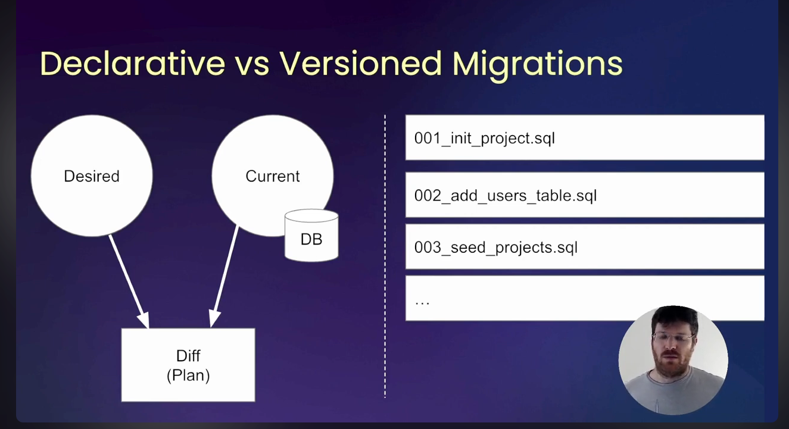

Versioned Migration
This is a versioned migration example using Atlas.
Create a env file
atlas.hcl
env "local" {
name = "local"
url = "sqlite3://my-version.db"
dev = "sqlite3://my-version-dev.db"
}
Create a new database called my-version-db.db
sqlite3 my-version.db
Check the status of the migration
atlas migrate status --env local
Migration Status: PENDING
-- Current Version: No migration applied yet
-- Next Version: 20241211025006
-- Executed Files: 0
-- Pending Files: 1
Apply the migration scripts in the migrations folder
atlas migrate apply --env local
Migrating to version 20241211025006 (1 migrations in total):
-- migrating version 20241211025006
-> create table users (
id integer primary key,
name text not null,
created_at timestamp not null,
updated_at timestamp not null
);
-- ok (873.708µs)
-------------------------
-- 4.294167ms
-- 1 migration
-- 1 sql statement
Check the status of the migration
atlas migrate status --env local
Migration Status: OK
-- Current Version: 20241211025006
-- Next Version: Already at latest version
-- Executed Files: 1
-- Pending Files: 0
Make a change to the schema
atlas migrate new --edit create_blog_posts_table
Check Altas status
atlas migrate status --env local
Migration Status: PENDING
-- Current Version: 20241211025006
-- Next Version: 20241211031821
-- Executed Files: 1
-- Pending Files: 1
Apply changes
atlas migrate apply --env local
Check Altas status
atlas migrate status --env local
Migration Status: OK --env local
-- Current Version: 20241211031821
-- Next Version: Already at latest version
-- Executed Files: 2
-- Pending Files: 0
Declarative vs Versioned Migration
